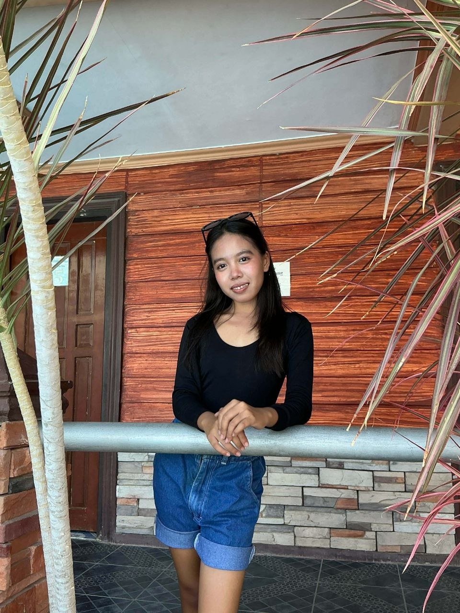
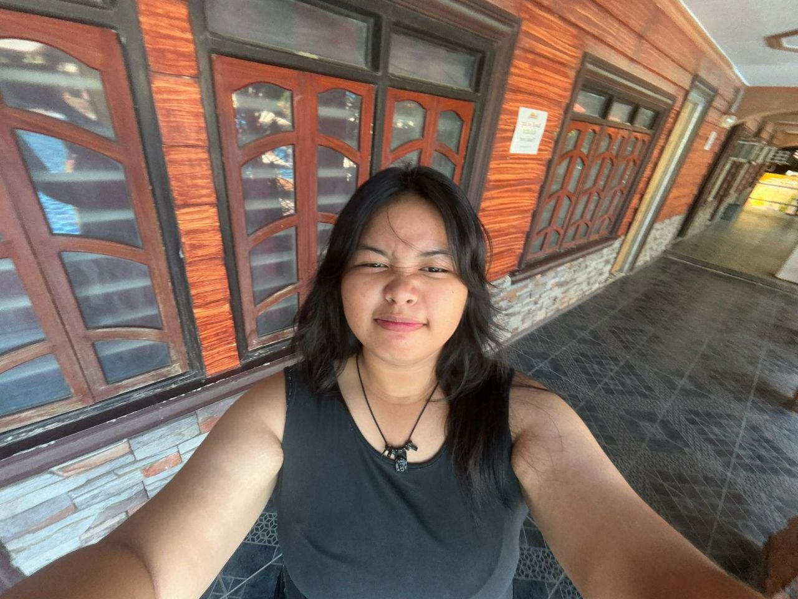
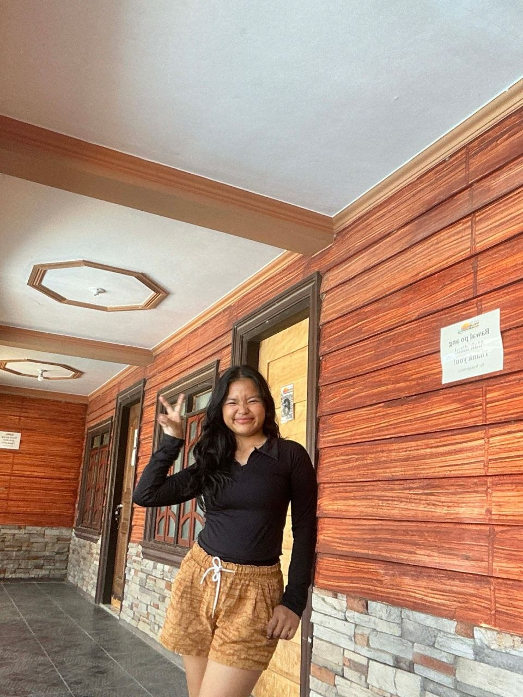
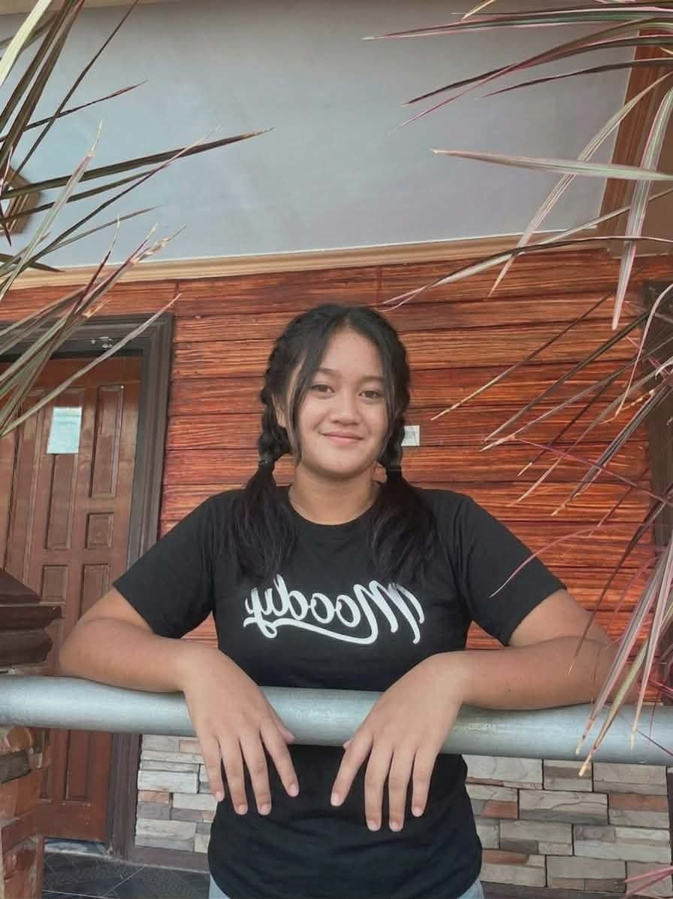
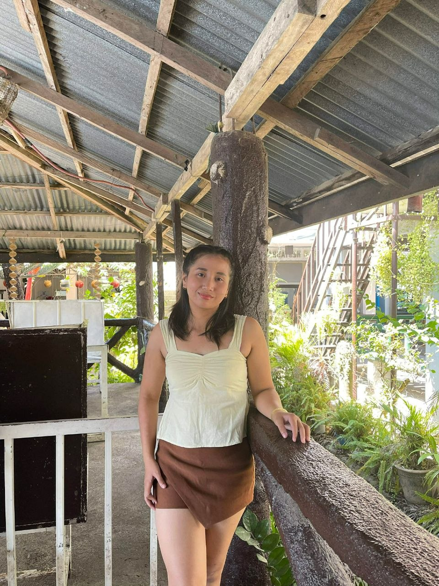
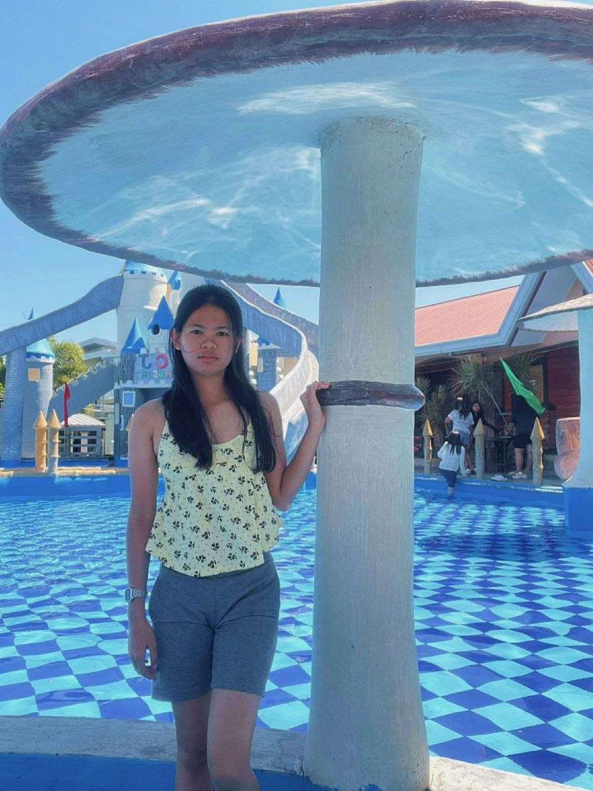

SCENE 1
Si Mara ang "shock absorber" ng pamilya. Siya ang unang nakakaalam kapag putol na ang kuryente, siya ang huling kumakain, at siya ang nagtatago ng sariling pagod para hindi panghinaan ng loob ang mga kapatid niya.
MARA: (Pipiliting maging mahinahon ang boses) "Ah, oo... Nakasalubong ko 'yung mga taga-Meralco/NEECO sa labas. May inaayos lang silang linya. Bukas na bukas, babalik din 'yan. Huwag ka nang mag-alala."
TATAY: "Anak, kumain ka na ba? May konting ulam pa doon sa plato, itinabi namin para sa’yo."
MARA: (Titingnan ang mesa—isang tuyo na lang ang natitira at kaunting kanin) "Busog pa ako, Tay. Pinakain kami ng supervisor ko sa mall dahil maganda ang benta. Sara, Lira... ubusin niyo na 'yan. Sayang naman."
SARA: (Mapapatingin kay Mara, alam na nagsisinungaling ang Ate niya) "Ate, kanina ka pa umalis. Alam kong hindi ka pa kumakain. Hati na tayo dito."
MARA: (Mariin pero nakangiti) "Sara, sabi nang busog ako, eh. Iyo na 'yan, kailangan mo ng lakas bukas sa pagde-deliver. Sige na, ubusin niyo na para makapagpahinga na kayo."
MARA: "Tay, inumin mo na 'yung gamot mo. 'Wag mong iisipin 'yung kuryente. Ako nang bahala doon. Basta magpahinga ka lang, ha?"
TATAY: (Hahawakan ang kamay ni Mara) "Salamat, anak. Napaka-swerte namin sa’yo. Hindi ko alam kung anong gagawin namin kung wala ka."
SCENE 2
Proud na proud ang mga magulang dahil Cum Laude si Mara. Isasabit ni tatay ang framed diploma ni Mara sa dingding na yari sa plywood. Pero sa likod ng saya, ipapakita ang hirap: naghahati sila sa isang maliit na sardinas para sa hapunan, at bibilangin ni tatay ang barya sa kanyang pitaka
NANAY: (Nakangiti pero may bahid ng pagod) "Oo naman. 'Yan ang tanging yaman nating hindi mananakaw ng utang. Mara, anak, halika na rito. Ikaw ang uuna, kumuha ka na ng ulam."
MARA: (Lalapit sa hapag, titingnan ang maliit na bowl ng sardinas) "Nay, Tay... hati-hati na tayo rito. Marami pa namang sabaw, kasya na sa ating lima 'yan."
TATAY: (Dudukutin ang pitaka, ilalabas ang ilang barya at lukot na bente) "Huwag kang mag-alala, anak. Sa susunod na linggo, kapag nakaluwag-luwag sa pasada, mag-a-Adobo tayo. Sa ngayon, pagtiyagaan muna natin 'to. Ang mahalaga, tapos ka na. Sigurado akong bukas-makalawa, magandang opisina na ang bagsak mo."
MARA: (Pilit ang ngiti, titingnan ang Tatay na palihim na binibilang ang barya para sa bukas) "Opo, Tay. Malaking tulong na 'to. Salamat po."
SCENE 3
Ipapakita ang araw-araw na routine ni Mara.
SARA: "Ate, wala na bang toothpaste? Pinipiga ko na 'yung tube, wala talagang lumalabas."
MARA: (Kalmado) "Nilagyan ko ng konting tubig kagabi para may magamit pa kayo ngayon. Hati muna kayo ni Lira ha? Sa Sabado pa ang sahod ni Tatay, bibili ako agad."
SARA: "Lagi namang 'sa Sabado' eh. Tapos 'yung project ko sa Science, Ate... kailangan daw ng cartolina at glue. Ngayon na ipapasa."
MARA: (Sandaling natigilan, iniisip ang barya sa bulsa) "Sige, gawan natin ng paraan. May natabi pa akong sampung piso rito para sa pamasahe ko sana, pero lalakarin ko na lang hanggang kanto. Kunin mo na doon sa ibabaw ng TV."
LIRA: "Ate Mara! 'Yung uniform ko, may mantsa pa rin! Hindi natanggal kahapon!"
MARA: (Lalapit kay Lira at kukunin ang polo) "Akin na, Lira. Ako na ang magkukuskos niyan sa banyo. Maupo na kayo rito, kumain na kayo. Hatiin niyo 'yung itlog ha? Huwag niyo nang gisingin si Nanay at Tatay, hayaan niyo muna silang magpahinga, puyat sila sa pasada kagabi."
LIRA: "Eh ikaw Ate? Hindi ka ba kakain? Sabay ka na sa amin."
MARA: (Nakangiti pero pagod ang mga mata) "Busog pa ako. Uminom na ako ng maraming tubig. Bilisan niyo na riyan, baka mahuli kayo sa school. Lira, 'yung sapatos mo, nilagyan ko na ng pandikit 'yung swelas na bumubuka, wag mo munang itatakbo para hindi kumalas agad."
SARA: (Pabulong) "Buti ka pa Ate, tapos ka na mag-aral. Cum Laude ka pa. Siguro pag may trabaho ka na, hindi na tayo ganito, 'no?"
MARA: (Hihinga nang malalim habang sinasabit ang basang uniform ni Lira sa tapat ng electric fan) "Kaya nga kailangan nating magtiis muna ngayon. Magiging maayos din ang lahat. O, s'ya, tapusin niyo na 'yan. Ako na ang magliligpit ng pinagkainan niyo."
Want to access the full script?
Then click this link to access the full script: Latay ng Karangalan Script
Ang mga naggaagandahang binibini na nagbibigay-Buhay sa Kwento
Characters

Mara
Maurene Callanta

Lira
Reynalyn Valenciana

Sarah
Krisha Joyce Carpio

Tatay
Lewis Alfred Tinio

Nanay
Jorriza Mae Talania
Tita 1
Ayhecia Las Pinas

Mabait na Tita
Pauline Medrano

Amo ni Mara 1
Christine Joy Florendo

Amo ni Mara 2
Althea Escuadro

Bruha na Tita 1
Princess Ericka Arata
Bruha na Tita 2
Andrea Ponce

Anak ng Amo 1
Rizza Gayla
Anak ng Amo 2
Mikaela Lagsilon

Anak ng Bruha 1
Jillian Petacio
Anak ng Bruha 2
Mary Grace Ramos

Anak ng Bruha 3
Laralaine Ocampo

Anak ng Tita
Lorie Fontanilla
Anak ng Tita 2
Trisha Mae Dela Cruz